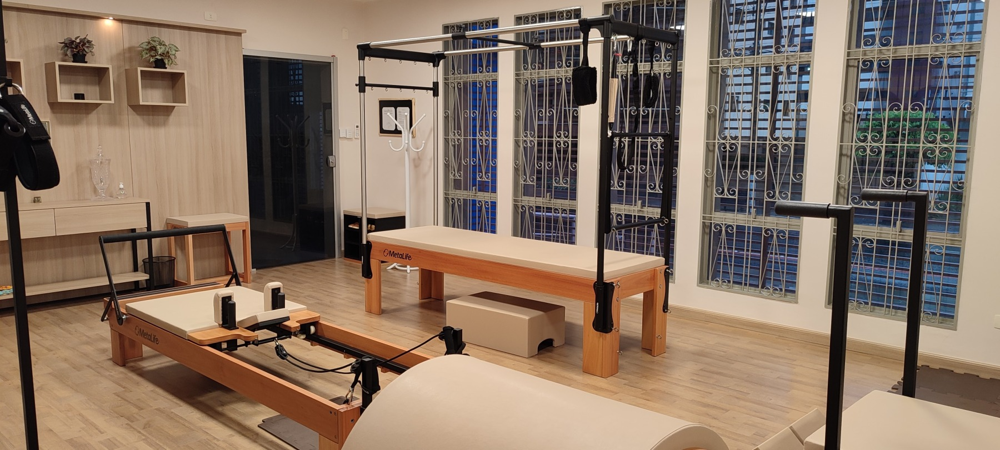
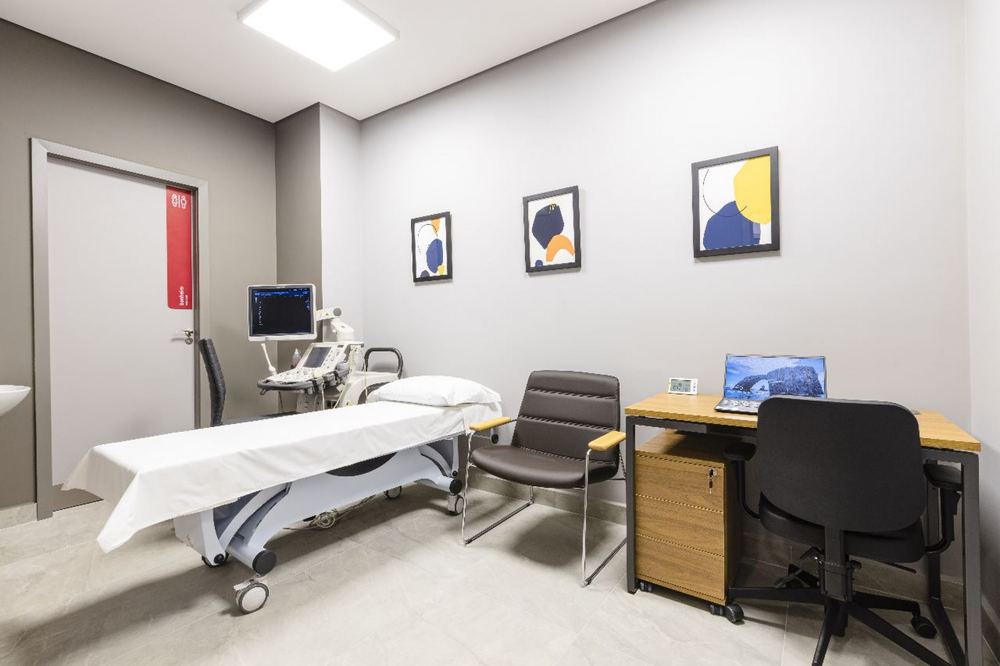
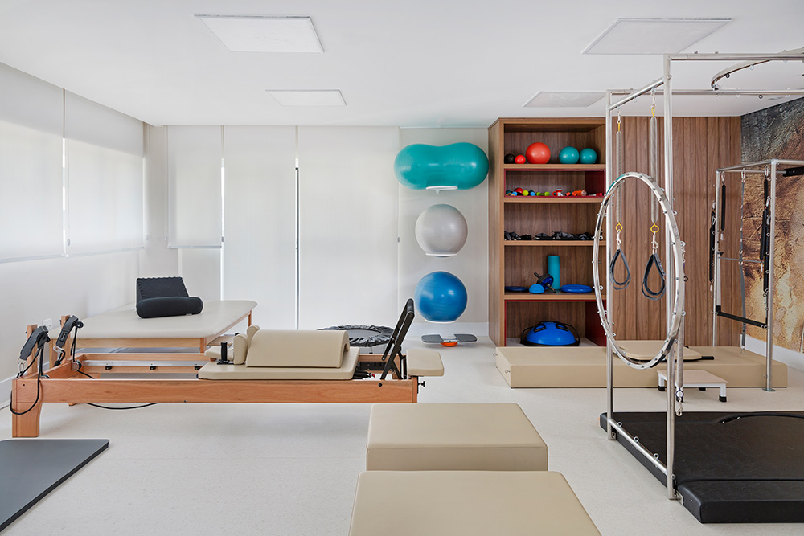

Acreditamos que a saúde vai além
da mera ausênsia de doenças
É um estado de equilíbrio físico, mental e emocional, e é nesse
contexto que nos destacamos. Nossa equipe de profissionais
altamente qualificados é composta por médicos, especialistas
em saúde mental, terapeutas e outros profissionais, todos
dedicados a oferecer um cuidado abrangente e compassivo.
Nosso compromisso
Com a excelência reflete-se não apenas na qualidade dos
nossos serviços, mas também na atenção individualizada
que dedicamos a cada paciente. Valorizamos a confiança
que você deposita em nós e buscamos estabelecer uma
parceria sólida para promover sua saúde ao mais alto nível.
Nossa missão
Vai além do consultório; buscamos ser uma fonte de inspiração
para um estilo de vida saudável e sustentável. Estamos aqui
para apoiá-lo em todas as fases da sua jornada de saúde,
oferecendo cuidados preventivos, diagnósticos precisos e
tratamentos personalizados.
Ao escolher a nossa clínica, você está optando por uma
experiência de cuidado centrada no paciente, onde a sua
saúde e bem-estar são nossa prioridade. Estamos ansiosos
para acompanhá-lo nesta jornada, promovendo uma vida
plena e saudável.
Nossa Estrutura
A estrutura da Vitalis Saúde foi cuidadosamente projetada para oferecer um ambiente acolhedor e funcional,
com foco no conforto e bem-estar dos nossos pacientes. Nossa clínica é equipada com instalações modernas
e tecnologicamente avançadas, proporcionando um espaço propício para uma variedade de serviços médicos
e terapêuticos.

Consultórios Médicos
Contamos com consultórios médicos equipados com tecnologia de ponta para garantir consultas precisas e
eficientes. Nossos profissionais altamente qualificados estão preparados para oferecer atendimento personalizado
em diversas especialidades, abrangendo desde medicina geral até especialidades mais específicas.

Salas de Exames e Diagnóstico
A nossa clínica dispõe de salas dedicadas a exames diagnósticos, equipadas com tecnologia avançada para
realização de análises laboratoriais, exames de imagem, e demais procedimentos necessários para uma
avaliação completa e precisa.

Espaço de Fisioterapia Integrada
Para promover a reabilitação e prevenção de lesões, nossa clínica possui um espaço de fisioterapia integrada.
Aqui, oferecemos tratamentos personalizados e acompanhamento especializado para otimizar a recuperação
e melhorar a qualidade de vida.

Sala de Espera Confortável
Nossa sala de espera foi projetada pensando no conforto dos nossos pacientes. Com um ambiente agradável,
oferecemos um espaço relaxante para aguardar sua consulta, com acesso a informações úteis e recursos
educativos sobre saúde.

Tecnologia e Inovação
A Vitalis Saúde investe continuamente em tecnologia e inovação. Utilizamos sistemas de prontuário eletrônico
integrado para garantir uma coordenação eficaz dos cuidados, e também oferecemos opções de telemedicina
para consultas remotas quando necessário.
Nosso compromisso com a excelência reflete-se não apenas na qualidade dos nossos serviços, mas também na infraestrutura que proporcionamos. Estamos empenhados em criar um ambiente que inspire confiança, promova a cura e contribua para o bem-estar global dos nossos pacientes.